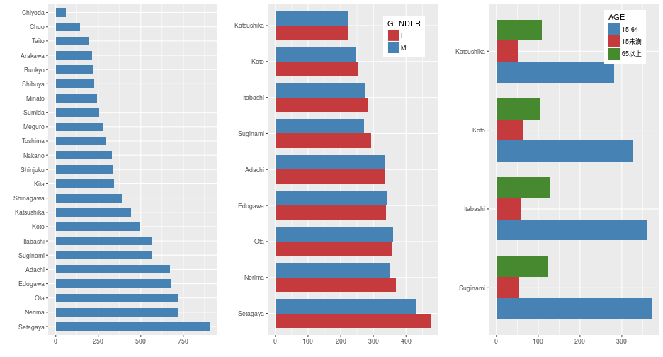

Coursera Data Science Specialization
Fritz Lin
September, 21st 2017
This presentation is part of the Coursera course on Developing Data Products
The Shiny app pitched by this presentation is at https://alpenfritz.shinyapps.io/tokyopopmap/
The Shiny app source code is available at https://github.com/alpenfritz/tokyopopmap/tree/master/app
The Tokyo Population Map App shows the population size in each of the 23 wards of Tokyo
Interactive Map using leaflet package to show information
Bar graphs for comparing general population sizes or population sizes by gender and age
